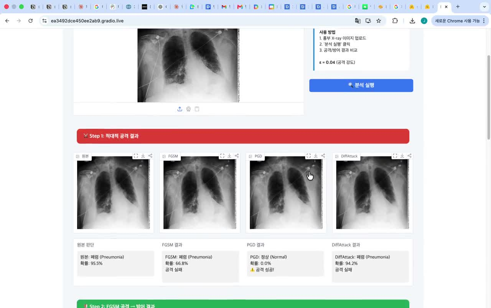
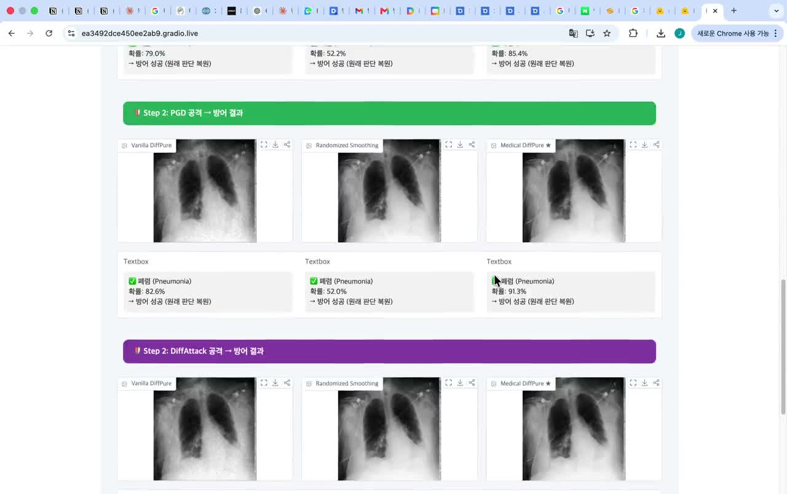

MedGuard
흉부 X-ray 분류기의 공격·방어를 비교했습니다. 기록된 DiffAttack 조건에서 Medical DiffPure는 Vanilla DiffPure보다 4.84%p 높은 정확도를 보였습니다.
프로젝트 한눈에 보기
의료영상 분류 강건성 실험
- 직접 담당
- 공격·방어 실험, 주파수 분석, 비교 시연
- DiffAttack 비교
- Medical DiffPure 78.56% / 기본 DiffPure 73.72%
- 검증 범위
- 실험 조건 내 방어 비교
- 사용 기술
- PyTorchResNet-50RoentGen VAEFFTGradio
01 · 문제 정의
공격을 지우는 과정에서, 분류에 필요한 정보도 사라질 수 있습니다.

흉부 X-ray 분류기에 대한 공격 방어는 노이즈를 많이 제거하는 문제로만 볼 수 없었습니다. 입력을 바꾸는 정화가 분류 결과와 원래 영상 구조에 함께 영향을 주기 때문입니다. 저는 ResNet-50 폐렴 분류기와 FGSM·PGD·DiffAttack 계열 공격, FFT 분석과 정화 비교를 연결했습니다.
02 · 대응 설계
공격 유형과 정화 강도를 함께 비교했습니다.
FFT로 주파수 변화를 살피고, RoentGen VAE 정화와 입력 이미지의 블렌딩을 조절했습니다. 강한 정화를 일률적으로 적용하기보다 공격 조건별 결과와 폐 영역 구조의 일치도를 함께 검토하는 실험 경로를 구성했습니다.
주파수 변화가 작다고 해서 정상 이미지와 잠재공간 공격을 확실히 구분할 수는 없습니다. 따라서 데모의 분기 규칙은 실험용 휴리스틱이며 일반적인 공격 탐지 보장으로 해석하지 않았습니다.
방어 후 분류 점수와 이미지 보존을 같은 것으로 보지 않게 됐습니다. 더 강한 변환이 필요한 정보까지 바꾸는지 함께 확인해야 했습니다.
03 · 확인한 결과
비교 조건을 고정하고, 결과의 범위를 남겼습니다.

공개 저장소의 동일 DiffAttack 조건에서 Medical DiffPure는 78.56%, Vanilla DiffPure는 73.72%로 4.84%p 차이를 기록했습니다. Medical DiffPure의 FGSM·PGD 조건 정확도는 각각 58.31%, 61.47%였습니다.
이 결과는 저장소에 기록된 설정의 비교입니다. 새로운 공격·다른 분포·정화 후 병변 보존까지 검증한 결과는 아니며, 실제 임상 적용 효과와도 구분합니다.
04 · 배운 점
방어의 목표를, 정확도 회복과 정보 보존으로 나눴습니다.
공격 조건을 명시하고 같은 조건의 비교를 남기는 것이 결과 해석에 중요했습니다. 새로운 방어를 평가할 때도 평균 점수뿐 아니라 어떤 입력을 바꿨고 무엇이 보존됐는지 확인해야 한다는 기준을 얻었습니다.
코드와 근거
구현과 판단의 근거를 함께 남깁니다.
PyTorch / ResNet-50 / RoentGen VAE / FFT / Gradio
2026.11.03 검토 · 개인 기여와 팀 성과, 완료한 실험과 진행 중인 연구를 구분했습니다.